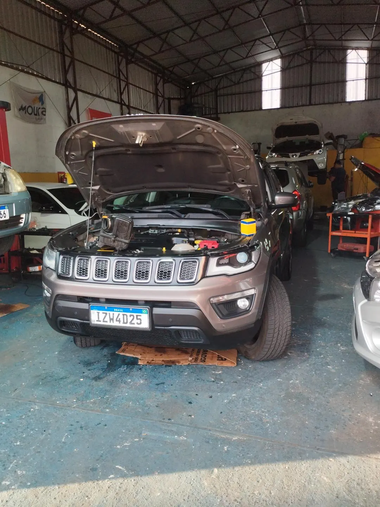
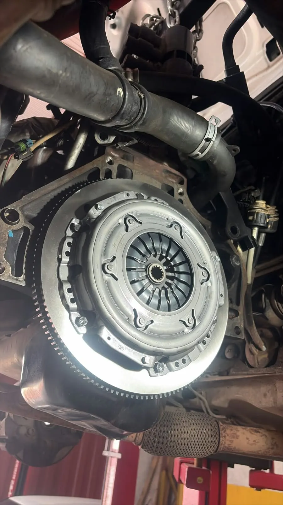
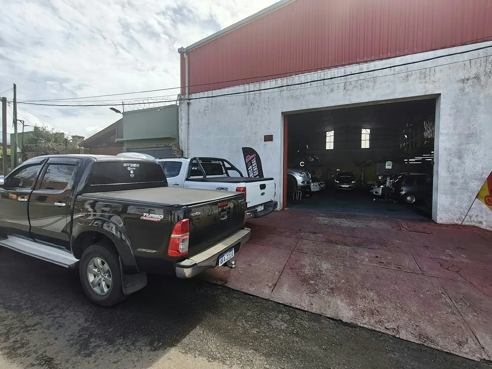
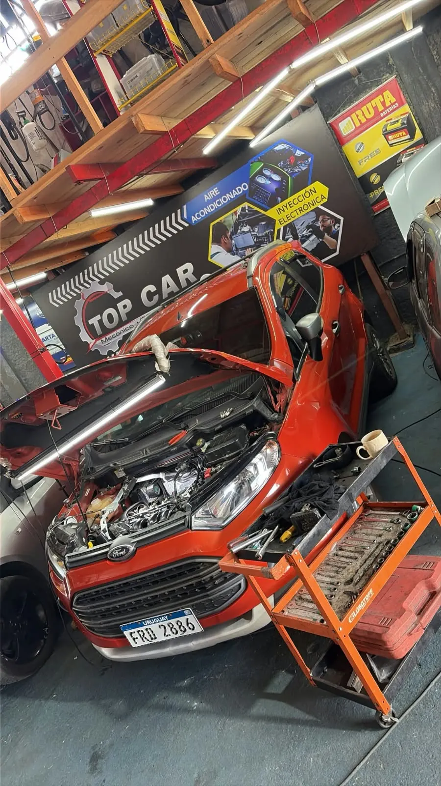
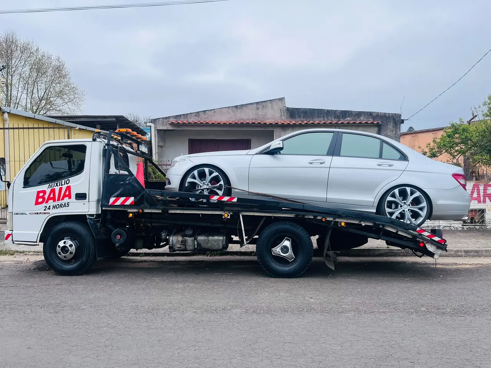

01
ENTENDER ANTES DE CAMBIAR
Diagnóstico e inyección
Lectura de fallas con escáner, revisión de sensores, bobinas e inyección electrónica. Relacionamos los datos con lo que hace tu auto.
¿Prendió el check engine o perdió fuerza?
ConsultarPASIÓN POR LOS FIERROS. PRECISIÓN EN CADA DETALLE.
Tu taller mecánico en Rivera. Diagnóstico con criterio, herramientas profesionales y las cosas claras desde el primer momento.

01 / LO QUE HACEMOS
Del mantenimiento de todos los días a esa falla que cuesta encontrar. Mecánica general para autos nacionales e importados.
Escribí el síntoma o el servicio, en español o portugués.
ENTENDER ANTES DE CAMBIAR
Lectura de fallas con escáner, revisión de sensores, bobinas e inyección electrónica. Relacionamos los datos con lo que hace tu auto.
¿Prendió el check engine o perdió fuerza?
ConsultarSEGURIDAD EN CADA METRO
Pastillas, discos, líquido de frenos, amortiguadores, bujes y rótulas. Revisamos ruidos, vibraciones y el comportamiento al frenar.
¿Chilla al frenar o golpea en los pozos?
ConsultarEL CORAZÓN DE TU AUTO
Mecánica general, embrague, distribución y transmisión. Evaluamos el origen del problema y te explicamos el trabajo necesario.
¿El motor falla o cuesta pasar los cambios?
ConsultarCUIDAR HOY. SEGUIR MAÑANA.
Cambio de aceite y filtros, revisión de niveles y mantenimiento preventivo según las necesidades de tu vehículo.
¿Te toca el service o vas a salir a la ruta?
ConsultarCADA SISTEMA, EN SU PUNTO
Batería y sistema de carga, radiador, bomba de agua, termostato y climatización. Buscamos la causa, no solo el síntoma.
¿No arranca, calienta o el aire no enfría?
ConsultarQUE EL CAMINO SE SIENTA BIEN
Control de alineación y balanceo para atender vibraciones, desvíos y desgaste irregular de los neumáticos.
¿Vibra el volante o el auto se va de lado?
ConsultarNo encontramos una coincidencia. Contanos qué hace tu auto y te orientamos.
WhatsApp ↗Esta búsqueda orienta sobre servicios; el diagnóstico requiere revisar el vehículo.

TOP CAR · Taller real02 / CRITERIO TÉCNICO. OFICIO DE VERDAD.
Nos gustan los motores. Y más todavía, entender qué les pasa. En TOP CAR combinamos experiencia mecánica, equipamiento profesional y una forma de trabajar metódica.
El escáner es el punto de partida. La inspección y el criterio mecánico completan el diagnóstico.
Equipamiento profesional para revisar y reparar con precisión. Cada trabajo tiene su procedimiento.
Te contamos qué encontramos, qué hace falta y cuánto cuesta antes de comenzar.
EL TALLER, POR DENTRO
Un vistazo a nuestro espacio y a los trabajos que pasan por TOP CAR. Fotos del taller, sin imágenes de stock.


Tocá una foto para verla completa.
03 / ASÍ TRABAJAMOS
Escribinos con la marca, el modelo y el síntoma. Coordinamos la revisión.
Inspeccionamos el vehículo, explicamos el diagnóstico y acordamos el trabajo con vos.
Hacemos la reparación y los controles correspondientes antes de entregar.
TOP CAR + AUXILIO BAIA
La trayectoria de BAIA en auxilio, ahora junto a TOP CAR. Asistencia 24 hs y traslado para autos, camionetas y camiones pequeños. Llamanos para coordinar y confirmar la cobertura según tu ubicación.
Para una emergencia, llamá directamente.
04 / DE ACÁ. DE LA FRONTERA.
Acá conviven el español, el portugués y las mil formas de hablar de un auto. Si buscás un taller mecánico en Rivera o una oficina mecânica cerca de Santana do Livramento, encontranos del lado uruguayo, en Paysandú 255.
Frenos o freios. Embrague o embreagem. Mantenimiento o revisão. Lo importante es entender qué necesita tu vehículo.
Ver a página em português ↗Coordiná tu visita por WhatsApp antes de venir. Para auxilio, consultá la cobertura según tu ubicación; no asumimos asistencia del lado brasileño.
05 / NOS ENCONTRÁS ACÁ
Lunes a viernes, de 8:30 a 18:30.
Sábados y domingos cerrado. Auxilio 24 hs.
El mapa se carga desde Google solo si lo abrís.
06 / RESPUESTAS CLARAS
El taller está en Paysandú 255, Rivera, Uruguay, en la ciudad fronteriza con Santana do Livramento, Brasil. Podés abrir la ubicación y las indicaciones desde esta página.
Mecánica general, motor, embrague y transmisión; diagnóstico con escáner e inyección electrónica; frenos y suspensión; alineación y balanceo; aceite y filtros; batería, refrigeración y aire acondicionado. Consultá por tu modelo y el trabajo que necesitás.
Sí. Contanos si no gira el motor, si gira pero no enciende, si se apaga o si perdió fuerza. Esos detalles ayudan a coordinar la revisión. El origen de la falla se confirma inspeccionando el vehículo.
Sí, TOP CAR y Auxilio BAIA ofrecen asistencia y traslado 24 hs para autos, camionetas y camiones pequeños. Llamá al +598 98 738 689 y compartí tu ubicación para confirmar la disponibilidad y la cobertura.
Sí, podés consultar y coordinar por WhatsApp. El taller está en Rivera, del lado uruguayo. La cobertura del auxilio debe confirmarse según la ubicación; no se promete servicio en Brasil.
Escribí al WhatsApp +598 98 738 689 con marca, modelo y el problema del vehículo. Coordinamos el diagnóstico y te explicamos el presupuesto antes de reparar. El horario habitual es de lunes a viernes de 8:30 a 18:30; consultá por feriados.
TOP CAR / RIVERA
Marca, modelo y ese ruido que no sabés cómo explicar. Empezamos por escucharte.